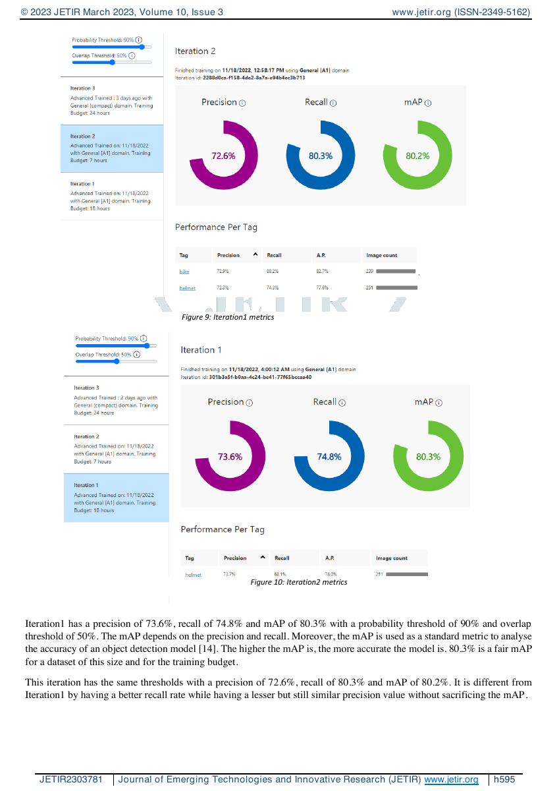

Published-paper walkthrough, no live model inference
Inspect the experiment behind the helmet detector.
Read the original published experiment by Laksh Goyal, compare the documented model iterations, and inspect the paper’s result pages.
